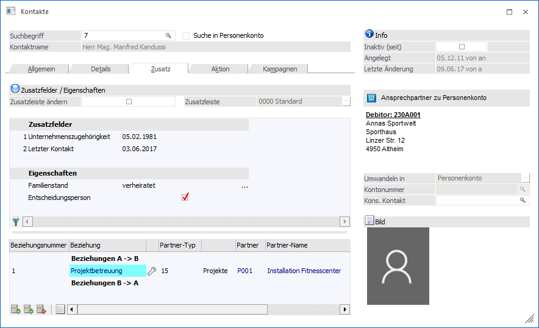
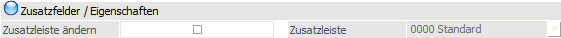
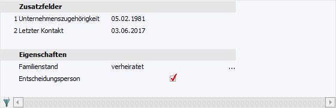
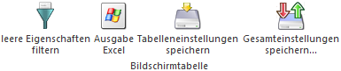
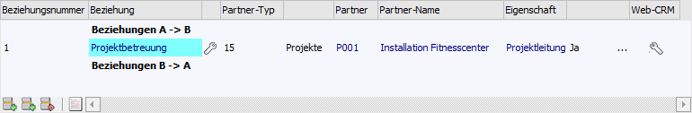

Im Register "Zusatz" können Zusatzfelder, Eigenschaften und Beziehungen des Kontakts hinterlegt werden.

Zusatzfelder / Eigenschaften

Ø Zusatzleiste ändern
Durch Aktivierung dieser Option kann in dem Feld "Zusatzleiste" eine abweichende Zusatzleiste hinterlegt werden.
Ø Zusatzleiste
Wenn die Option "Zusatzleiste ändern" aktiviert wurde, kann an dieser Stelle mit Hilfe einer Auswahlbox eine abweichende Zusatzleiste definiert werden,
Tabelle "Zusatzfelder und Eigenschaften"
In der Tabelle können die Zusatzfelder und Eigenschaften befüllt werden.

Die Definition der Zusatzfelder und Zusatzleisten findet in WinLine START (Optionen - Zusatzfelder…) statt. Die Anlage der Eigenschaften erfolgt ebenfalls in WinLine Start (Optionen - Eigenschaften).
Tabellenbuttons "Zusatzfelder und Eigenschaften"

Ø leere Eigenschaften filtern
Durch Drücken des Buttons (der Button bleibt gedrückt bis er wieder angewählt wird) werden nur noch jene Eigenschaften angezeigt, welche auch mit einem Wert versehen sind.
Ø Ausgabe Excel
Durch Anwahl des Buttons "Ausgabe Excel" wird der Inhalt der Tabelle nach Microsoft Excel übergeben.
Ø Tabelleneinstellungen speichern
Die Spalten einer Tabelle können grundsätzlich an beliebige Positionen verschoben, bzw. in der Breite entsprechend angepasst werden. Durch Anwahl des Buttons "Tabelleneinstellungen speichern" werden die Einstellungen benutzerspezifisch gespeichert und bei dem nächsten Aufruf des Programmpunktes wieder vorgeschlagen.
Ø Gesamteinstellungen speichern
Im Gegensatz zu "Tabelleneinstellungen speichern" können mit "Gesamteinstellungen speichern" mehrere Tabellenaufbauten gespeichert und nach Wunsch geladen werden. Zusätzlich werden Sonderfunktionen der Tabelle (z.B. "Spalte gruppieren") ebenfalls bei der Speicherung bedacht.
Tabelle "Beziehungen"
In der zweiten Tabelle können beliebig viele Beziehungen für den Kontakt hinterlegt werden. Es werden aber auch die bereits bei anderen Objekten hinterlegten Beziehungen, bei denen der Kontakt als Partner eingetragen wurde, angezeigt.

Neue Beziehungen können mit Hilfe der Tabellenbuttons ("Zeile A->B einfügen" oder "Zeile B->A einfügen") erzeugt werden. Dabei stehen folgende Felder zur Verfügung:
Ø Beziehungsnummer
Aus der Auswahlbox kann die Art der Beziehung ausgewählt werden, welche erfasst werden soll.
Ø Beziehung
Hier wird die Bezeichnung der Beziehung angezeigt, wobei die Bezeichnung in der Farbe dargestellt wird, welche im Beziehungsstamm hinterlegt wurde.
Ø Icon
In diesem Feld wird - sofern im Beziehungsstamm hinterlegt - die Grafik der Beziehung dargestellt.
Ø Partner-Typ
Aus der Auswahlbox kann der Partner-Typ gewählt werden, wobei hier die Optionen "Personenkonten", "Vertreter", "Kontoakte" und "Projekte" zur Verfügung stehen. Im nächsten Feld wird der ausgewählt Typ in Klartext angezeigt.
Ø Partner
In diesem Feld muss der Partner der Beziehung ausgewählt werden, wobei mit der Matchcode-Funktion nach allen "Partnern" gesucht werden kann. Abhängig davon, welcher Typ ausgewählt wurde, wird auch entsprechend gesucht (nach Personenkonten, Vertretern, Kontakte oder Projekte). Wurde ein Partner ausgewählt, wird der Name des Partners im nächsten Feld angezeigt.
Ø Eigenschaft
In diesem Feld wird die im Beziehungsstamm hinterlegte Eigenschaft angezeigt. In der nächsten Spalte kann der dazugehörige Wert hinterlegt werden. Je nach Eigenschaft kann der Werte aus einer Auswahlbox ausgewählt oder direkt eingetragen werden.
Ø Web-CRM
Sofern die WEBEdition installiert ist (zumindest CRM I) wird in dieser Spalte das Symbol angezeigt. Beim Klick auf diesen Button werden die CRM-Fälle angezeigt, bei denen die aktuell aktivierte Beziehung hinterlegt ist.
Tabellenbuttons "Beziehungen"

Ø Zeile A->B einfügen
Durch Anklicken des Buttons "Zeile A->B einfügen" kann eine neue "A zu B"-Beziehung angelegt werden.
Ø Zeile B->A einfügen
Durch Anwahl des Buttons "Zeile B->A einfügen" kann eine neue "B zu A"-Beziehung angelegt werden.
Ø Zeile entfernen
Durch Anklicken des Entfernen-Buttons können bestehende Beziehungen gelöscht werden. Die beiden Zeilen
ü Beziehungen A -> B
ü Beziehungen B -> A
können nicht gelöscht werden, da es sich dabei um die Überschriftenzeilen handelt.
Ø Journal ausgeben
Durch Anklicken des Buttons "Journal ausgeben" wird ein Beziehungsjournal ausgegeben, wobei als Hauptkriterium das Projekt verwendet wird.
Hinweis
Das Beziehungsjournal kann auch ausgegeben werden, wenn ein Doppelklick auf eine Beziehung durchgeführt wird - in diesem Fall wird als Hauptkriterium die Beziehung verwendet - d.h. in diesem Fall werden alle Partner der ausgewählten Beziehung angezeigt.
Ø Ausgabe Excel
Durch Anwahl des Buttons "Ausgabe Excel" wird der Inhalt der Tabelle nach Microsoft Excel übergeben.
Ø Tabelleneinstellungen speichern
Die Spalten einer Tabelle können grundsätzlich an beliebige Positionen verschoben, bzw. in der Breite entsprechend angepasst werden. Durch Anwahl des Buttons "Tabelleneinstellungen speichern" werden die Einstellungen benutzerspezifisch gespeichert und bei dem nächsten Aufruf des Programmpunktes wieder vorgeschlagen.
Ø Gesamteinstellungen speichern
Im Gegensatz zu "Tabelleneinstellungen speichern" können mit "Gesamteinstellungen speichern" mehrere Tabellenaufbauten gespeichert und nach Wunsch geladen werden. Zusätzlich werden Sonderfunktionen der Tabelle (z.B. "Spalte gruppieren") ebenfalls bei der Speicherung bedacht.